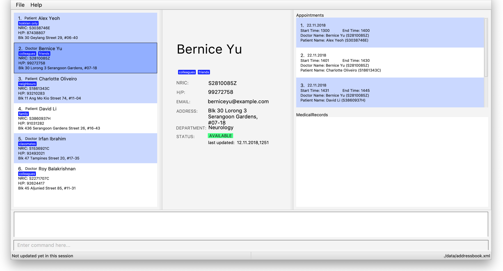

By: Team W16-3 Since: Sep 2018 Licence: MIT
- 1. Introduction
- 2. Quick Start
- 3. Features
- 3.1. Viewing help :
help - 3.2. Adding a person:
add - 3.3. Listing all relevant personnel :
list - 3.4. Editing a person :
edit - 3.5. Locating person by any attribute:
find - 3.6. Deleting a person :
delete - 3.7. Selecting a person :
select - 3.8. Listing entered commands :
history - 3.9. Undoing previous command :
undo - 3.10. Redoing the previously undone command :
redo - 3.11. Clearing all entries :
clear - 3.12. Adding a doctor :
adddoc - 3.13. Listing doctors :
listdoc - 3.14. Displaying medical appointments :
display - 3.15. Scheduling medical appointments :
schedule - 3.16. Viewing medical records of patients :
records - 3.17. Updating medical records of patients :
update - 3.18. Exiting the program :
exit - 3.19. Saving the data
- 3.20. Intuitive command prompting
- 3.21. Encrypting data files
[coming in v2.0]
- 3.1. Viewing help :
- 4. FAQ
- 5. Command Summary
1. Introduction
One Life (OL) is for service providers in the healthcare industry who prefer to use a desktop application for managing patient and doctor information. More importantly, One Life is optimized for those who prefer to work with a Command Line Interface (CLI) while still having the benefits of a Graphical User Interface (GUI). If you prefer typing, One Life can get your medical information management tasks done faster than traditional GUI apps. Interested? Jump to the Section 2, “Quick Start” to get started. Enjoy!
2. Quick Start
Listed below are instructions to help you get started:
-
Ensure you have Java version
9or later installed in your Computer. -
Download the latest
addressbook.jarhere. -
Copy the file to the folder you want to use as the home folder for One Life.
-
Double-click the file to start the app. The GUI should appear in a few seconds.
 -
Type the command in the command box and press Enter to execute it.
E.g. typinghelpand pressing Enter will open the help window.
Some example commands you can try:-
list: lists all contacts. -
addr/patient n/John Doe p/98765432 e/johnd@example.com a/John street, block 123, #01-01 ic/S9601234A: adds a patient namedJohn Doeto the database. -
delete3: deletes the 3rd contact shown in the current list. -
exit: exits the app.
-
-
Refer to Section 3, “Features” for details of each command.
3. Features
Command Format
-
Words in
UPPER_CASEare the parameters to be supplied by the user e.g. inadd n/NAME,NAMEis a parameter which can be used asadd n/John Doe. -
Items in square brackets are optional e.g
n/NAME [t/TAG]can be used asn/John Doe t/friendor asn/John Doe. -
Items with
… after them can be used multiple times including zero times e.g.[t/TAG]…can be used ast/friend,t/friend t/familyetc. -
Parameters can be in any order e.g. if the command specifies
n/NAME p/PHONE_NUMBER,p/PHONE_NUMBER n/NAMEis also acceptable.
3.1. Viewing help : help
Opens user guide.
Format: help
3.2. Adding a person: add
Adds a patient or doctor to the database.
Adding a patient
Format: add r/patient n/NAME ic/NRIC p/PHONE_NUMBER e/EMAIL a/ADDRESS [t/TAG]…
Adding a doctor
Format: add r/doctor n/NAME ic/NRIC p/PHONE_NUMBER e/EMAIL a/ADDRESS md/MEDICAL_DEPARTMENT [t/TAG]…
| A person can have any number of tags (including 0) |
Examples:
-
add r/patient n/John Doe Xiao Huang ic/S1234567A p/98765432 e/johnd@example.com a/John street, block 123, #01-01 t/Hokkien-speaker -
add r/doctor n/Betsy Crowe ic/S8234567F e/betsycrowe@example.com a/Newgate Estates p/1234567 md/dentistry
| When adding a new doctor you are required to specify his/her medical department. |
3.3. Listing all relevant personnel : list
Shows a list of all of the people in the database.
Format: list [r/ROLE]
Examples:
-
list
Lists all doctors and patients in the database. -
list r/patient
Lists all patients in the database. -
list r/doctor
Lists all the doctors in the database.
3.4. Editing a person : edit
Edits an existing person in the database.
Format: edit INDEX [n/NAME] [ic/NRIC] [p/PHONE] [e/EMAIL] [a/ADDRESS] [t/TAG]…
Examples:
-
edit 1 p/91234567 e/johndoe@example.com
Edits the phone number and email address of the 1st person to be91234567andjohndoe@example.comrespectively. -
edit 2 n/Betsy Crower t/
Edits the name of the 2nd person to beBetsy Crowerand clears all existing tags.
3.5. Locating person by any attribute: find
Finds people with the keyword specified by the user. Specified keyword can belong to any part of any attribute of the
person (i.e. name, phone number, address, tags etc).
Format: find KEYWORD [MORE_KEYWORDS]
Examples:
-
find Goh
ReturnsGary Goh YipengandKenneth Goh Jun Teck. -
find Ng Tan
Returns any person having namesNg Kang TzeandTan Thong Cai, Nelvin.
3.6. Deleting a person : delete
Deletes the specified person from the database.
Format: delete INDEX
Examples:
-
list
delete 2
Deletes the 2nd person in the database. -
find Betsy
delete 1
Deletes the 1st person in the results of thefindcommand.
3.7. Selecting a person : select
Selects the person identified by the index number used in the displayed person list.
Format: select INDEX
Examples:
-
list
select 2
Selects the 2nd person in the database. -
find Betsy
select 1
Selects the 1st patient in the results of thefindcommand.
3.8. Listing entered commands : history
Lists all the commands that you have entered in reverse chronological order.
Format: history
|
Pressing the ↑ and ↓ arrows will display the previous and next input respectively in the command box. |
3.9. Undoing previous command : undo
Restores the database to the state before the previous undoable command was executed.
Format: undo
|
Undoable commands: those commands that modify the database’s content ( |
Examples:
-
delete 1
list
undo(reverses thedelete 1command) -
select 1
list
undo
Theundocommand fails as there are no undoable commands executed previously. -
delete 1
clear
undo(reverses theclearcommand)
undo(reverses thedelete 1command)
3.10. Redoing the previously undone command : redo
Reverses the most recent undo command.
Format: redo
Examples:
-
delete 1
undo(reverses thedelete 1command)
redo(reapplies thedelete 1command) -
delete 1
redo
Theredocommand fails as there are noundocommands executed previously. -
delete 1
clear
undo(reverses theclearcommand)
undo(reverses thedelete 1command)
redo(reapplies thedelete 1command)
redo(reapplies theclearcommand)
3.11. Clearing all entries : clear
Clears all entries from the database.
Format: clear
3.12. Adding a doctor : adddoc
Create and add a new doctor into the database.
Format: adddoc n/NAME p/PHONE_NUMBER e/EMAIL md/MEDICAL_DEPARTMENT [t/TAG]
Examples:
-
adddoc n/Chew Tiong Seng p/91234567 e/chew@gmail.com md/oncology t/HOD
Creates a new doctor in the database.
3.13. Listing doctors : listdoc
Lists all doctors in the database and their current availability based on their appointment.
Format: listdoc
3.14. Displaying medical appointments : display
Displays a list of medical appointments that are currently scheduled for the specified person.
Format: display INDEX
Examples:
-
display 1
Displays the list of appointments of the person in the person card list.
3.15. Scheduling medical appointments : schedule
Schedules a patient/doctor for a medical appointment at a specific date and time.
Format: schedule INDEX d/DATE st/START_TIME et/END_TIME dn/DOCTOR_NAME md/DOCTOR_MEDICAL_DEPARTMENT pn/PATIENT_NAME ic/PATIENT_NRIC
Examples:
-
schedule 1 d/23.11.2018 st/1300 et/1400 dn/Jack md/Heart pn/John Doe ic/S1234567A
SchedulesJohn Doefor an appointment with doctorJackof theHeartdepartment on the 23nd of November 2018 from 1pm to 2pm.
3.16. Viewing medical records of patients : records
Displays the most updated medical records of a given patient if no date is specified. Else, displays the most recent medical record before the specified date.
Format: records n/name [d/DATE]
Examples:
-
records n/Jack d/22.11.2018
Displays the most recent medical record ofJackbefore 22nd November 2018. -
records n/Jack
Displays the most recent medical records ofJack.
3.17. Updating medical records of patients : update
Adds a new medical record for the patient as the most updated record using the current date as date of record.
Format: update INDEX d/DATE dg/DIAGNOSIS tr/TREATMENT [c/COMMENTS]
Examples:
-
update 1 d/22.11.2018 dg/flu tr/tamiflu
Updates patient at index 1 medical records with the given description.
3.18. Exiting the program : exit
Exits the program.
Format: exit
3.19. Saving the data
One Life data are saved in the hard disk automatically after any command that changes the data.
There is no need to save manually.
3.20. Intuitive command prompting
Intuitive prompting for the user when a command that takes in parameters is entered without any parameters specified. This feature aids new users and makes it easier and more natural for them to use the system. The nature of this feature allows users to enter data without adding prefix tags, and also supports cases where certain data fields are intentionally left blank. The original command input format is still supported to allow quick command entry for seasoned users.
Use /bk to re-enter previous field.Use // if the field is to be blank.
|
Examples:
add
You entered: add
Is this a patient or a doctor? (Please enter patient or doctor)
patient
You entered: patient
Please enter person's name
...3.21. Encrypting data files [coming in v2.0]
{explain how the user can enable/disable data encryption}
4. FAQ
Q: How do I transfer my data to another Computer?
A: Install the app in the other computer and overwrite the empty data file it creates with the file that contains the data of your previous OneLife folder.
5. Command Summary
-
Add Patient :
add r/patient n/NAME ic/NRIC p/PHONE_NUMBER e/EMAIL a/ADDRESS [t/TAG]…
e.g.add r/patient n/James Ho ic/S1234567A p/22224444 e/jamesho@example.com a/123, Clementi Rd, 1234665 t/friend t/colleague ic/S1234567A -
Add Doctor :
add r/doctor n/Bobby Tan ic/S1234567B p/91234567 e/BBTan@example.com a/123, Clementi Rd, 123456 md/Dentistry -
Clear :
clear -
Delete :
delete INDEX
e.g.delete 3 -
Edit :
edit INDEX [n/NAME] [p/PHONE_NUMBER] [e/EMAIL] [a/ADDRESS] [t/TAG]…
e.g.edit 2 n/James Lee e/jameslee@example.com -
Find :
find KEYWORD [MORE_KEYWORDS]
e.g.find James Jake -
List People :
list -
Help :
help -
Select :
select INDEX
e.g.select 2 -
History :
history -
Undo :
undo -
Redo :
redo -
Add Doctor :
adddoc n/NAME p/PHONE_NUMBER e/EMAIL md/MEDICAL_DEPARTMENT [t/TAG]
e.g.adddoc n/Chew Tiong Seng p/91234567 e/chew@gmail.com md/oncology t/HOD -
List Doctors :
listdoc -
Display Medical Appointments :
display INDEX -
Schedule Medical Appointments :
schedule INDEX d/DATE st/START_TIME et/END_TIME dn/DOCTOR_NAME md/DOCTOR_MEDICAL_DEPARTMENT pn/PATIENT_NAME ic/PATIENT_NRIC
e.g.schedule 1 d/23.11.2018 st/1300 et/1400 dn/Jack md/Heart pn/John Doe ic/S1234567A -
View Medical Records :
records n/NAME [d/DATE] -
Update Medical Records :
update INDEX d/DATE dg/DIAGNOSIS tr/TREATMENT c/COMMENTS
e.g. `update 2 d/22.11.2018 dg/flu tr/tamiflu